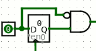
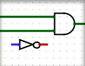
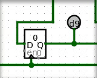

| Library: | Mouse Tools |
| Introduced: | 2.3.0 |
The Multi-Tool allows the user to select and rearrange existing components,
and to add, move, and rearrange wires. Exactly what the tool does depends on
where the user presses the mouse on the canvas. This tool is a combination of
the  Move Tool and
the
Move Tool and
the  Wiring Tool.
Wiring Tool.
 When the mouse is over a wiring point for an existing component, or if it is atop a current wire, the Multi-Tool will display a small green circle around the mouse's location. Clicking and dragging will create new wire segments. All wires in Logisim are either horizontal or vertical, never diagonal, but logisim will create an "L" shaped sequence of wire segments for you if you drag diagonally.
Hint: Press space while dragging to bend a wire's path.. You can do this repeatedly to make a complicated zig-zag path for the wire by pressing space at each place the wire should turn a corner. Press backspace while dragging to straighten a wire's path. Each backspace will remove a corner point resulting in fewer turns and a more direct path.
 Click and drag the end of a wire to shorten or extend it, or click and drag the middle of a wire segment and drag along the wire to open a gap.
Hover over the wiring point of a component to see a description of that input or output.
Some components draw short stubs near the points to which wires can connect, such as the OR gate and controlled buffer. Logisim will silently correct attempts to create wires that slightly overshoot the stub's end.
 A simple click on wire or a component, without dragging, will simply select the the component or wire segment. Holding shift while clicking a wire or component will add it to the current selection if it was not there already, or will remove it if it was. After selecting the desired items in the selection, you can of course cut/copy/paste/delete/duplicate all the items via the Edit menu.
Click then drag the mouse on the background (i.e. starting at a location not contained within any components) to begin a rectangular selection. All components that are fully contained by the rectangle will be selected. Holding shift while making a rectanglar selection will add the new elements if they were not there already, or will remove them if they were.
Clicking and dragging a currently-selected component or wire segment will begin moving all elements of the selection.
By default, Logisim will compute a way to add new wires, or remove or shorten
existing wires, so that no existing connections are lost during the move.
If you're performing a move where you do not want these changes to be made, you
can press the shift key during the move. If you want to
disable this behavior entirely, go to Project > Options, select the Canvas
tab, and uncheck the Keep Connections When Moving
box; in this case, the
connections are computed only when the shift key
is down.
Note: Dragging a selection containing wires can somteimes lead to surprises. If you drag a selection including some wires on top of some other wires, all wires are merged, and the newly-merged wires are added the selection. As a result, if you then drag the selection a second time, the wires previously at the location will not be left behind. This behavior is in keeping with the rule in Logisim that wires never overlap. And it does not normally constitute a major problem: Logisim will draw the full selection in the midst of dropping, and you should not drop it until you are sure it is in the correct location.
Some keys have an effect when items have been selected.
Remove components and wires using Delete or Backspace keys. These will delete everything selected from the circuit.
Duplicate components and wires using the Insert key. This will create a duplicate of all currently-selected wires and components.
When duplicating a selection or pasting, Logisim does not immediately place the new components into the circuit; instead, the selection will be a collection of "ghosts," which will be dropped into the circuit as soon as they are either deselected or dragged to another location.
Pressing the Alt key when clicking causes the click to be ignored.
If, however, the user presses the Alt key at a point in the middle of
the wire, then the green circle will disappear. A mouse press selects the wire,
and a mouse drag moves it.
However, if the Alt key is pressed at a location not contained within
any components, this initiates the addition of a new wire. A small green circle
is drawn in such a circumstance to indicate this.
None. Selecting a component, though, will display its attributes. With multiple components selected, attributes shared by all are shown, blank if they have different values and otherwise with the value they all have in common. (Wires are ignored if there are any non-wires in the selection.) Changes to the attribute value affect all selected components.